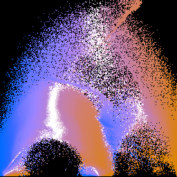
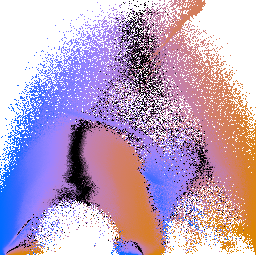

One of the basic ideas in my MS research was construction of what I called a "position function", although "distance map" is a better match with more recent volume graphics terminology. Usually, a distance map describes the signed distance to a surface as measured from sample points on a regular grid; this is one way of implicitly representing a surface with volume data.The distance map in my case is somewhat different: the domain of the distance map is not the (x,y,z) position in the volume, but it is the space of the scalar data values which comprise the volume dataset. The space of data values is the one that matters for setting transfer functions. Wouldn't it be nice to know which data values tend to correspond with the centers of boundaries in the dataset (these would make good isovalues for iso-surfacing), or how far from the boundary center a given isovalue tends to lie? The position function (or distance map) can give this information: for each data value v, p(v) gives the signed distance to the nearest boundary. Furthermore, it is calculated automatically from the histogram volume. With the position function, we can give opacity to the values which tend to occur in the middles of boundaries, thereby visualizing important structural elements of the data.
However, the position function does not need to have merely one-dimensional; two-dimensional opacity functions have been around since Marc Levoy's influential 1988 Display of Surfaces from Volume Data paper. As in Levoy's paper, I use gradient magnitude as the second axis for my opacity function. When voxel data is projected into the 2-D space of data value and gradient magnitude, subtleties about the boundaries become discernable, assuming that you have some intuition for what those projections look like. When, in addition, the information about second derivatives is added to the picture, you have a rich account of the potential boundaries which exist in the data. This information can be fed into futher (semi-) automated analysis, or it can be inspected on its own for guidance in setting a transfer function by hand.
<digression>
It is important to point out that the position function estimate does not have to be perfectly accurate in order to be useful. The position function estimate is most accurate when the data obeys a certain boundary model. Strictly speaking, absolutely no real measured data actually obeys that model, yet my method still tends to work on (relatively clean, well-sampled) real data. This is probably because the most important part of the position function not its exact shape, but simply its sign: for a given data value, is the position function positive, negative, or zero? That is, is the isosurface for a given data value outside, inside, or on top of the center of a material boundary? The sign of the position function is derived from the second derivative measurement. One powerful way of locating the middle of a transition region between two regions is to find the zero crossing in a second derivative measure.
So the important property of the automatically calculated position function is the location of its zero crossings, and the continuity of the position function near its zero crossings. Everything past that relies to a greater or lesser extent on the particular boundary model, but in my experience, that reliance has not been the weakest component of my method. Rather, I feel the weakest component of my Master's thesis research has to do with the combination of two factors:
This means that there is no way of tuning the process to be sensitive to particular scales of boundary, and there is no way of knowing if some hits in the histogram volume came from scattered noise, or from some spatially localized pattern. Essentially, the current method for calculating the histogram volume is not the best way to measure information about the "boundaries that matter", or, the information it measures is not the most important information for setting transfer functions that work optimally in a variety of cases.
- The histogram process loses all spatial information, including any notions of spatial locality.
- The measurement contained in the histogram happens only at one resolution-- the resolution of the voxel's sample points-- and never any coarser or finer.
Here is probably the strongest claim from the VolVis 98 paper:
"This is the main benefit of this method: if the histogram volume has successfully captured information about the boundaries in the dataset, the user enjoys high-level control over the character of the rendered boundaries without having to worry about the exact specification of alpha(v)"The first part of the statement is really the important one. All of this research really does rely on the underlying assumption that the histogram volume captured the information that matters. If you don't allow yourself to make any kind of assumption about what the shape of boundaries are, you have less analytical ground to stand on when processing a histogram volume. Making an assumption about the boundary model, as I did, is one way of leveraging the existing functionality of something as simple as the histogram volume.I believe it always makes sense to make some assumptions about just what sort of feature it is that you're looking for, if you're trying to automate a feature-detection process; its just that those assumptions can't be too outlandish or limiting. Plus, I don't see how to go the final step, beyond creating "guidance" for the human specification of a transfer function, to actually algorithmically generating an opacity function, if at some point you don't make some assumptions about the features that you want to see in the final rendering. This may also make for interesting reading.
</digression>
Here the options for generating a color-mapped image of p(v,g):
Note that the required input is a 2-D info file (as generated by gkms info -d 2). Setting sigma actually has no real effect on the image, since the values are histogram-equalized and then colormapped to make the picture. Setting gthresh is likewise unexciting- it will only void out part of the image at low gradient magnitudes. These two settings are here basically for parity with gkms opac, which actually calculates the same p(v,g) function as an intermediate step (in which case sigma and gthresh do matter). The other settings are just for cosmetic purposes, depending on what color you like your background and zero crossing to be.gkms pvg: Create color-mapped pictures of p(v,g). This produces a qualitative visualization of the boundary information that was captured in the histogram volume. The quantity shown is called the "position function" in GK's published work, but a better term would be "distance map", as a function of value (v) and gradient magnitude (g). Usage: gkms pvg [-inv] [-m <mapOut>] -i <infoIn> -o <imageOut> -inv = Draw on white background, instead of black -m <mapOut> = save out the colormap used here, so that it can be applied to other nrrds with "unu imap -r" (string) -i <infoIn> = input info file (from "gkms info") -o <imageOut> = output image, in PPM format (string)The default output, as well as one with black and white flipped:
gkms pvg -i engine-info2.nrrd -o engine-pvg.png gkms pvg -inv -i engine-info2.nrrd -o engine-pvg2.png
  engine-pvg.png engine-pvg2.png If, for some reason, you are interested in nothing but making these p(v,g) colormapped images, you can do it in one shot by piping invocations of gkms together. It takes a little while to run (since generating histogram volumes is slowish), but its easy to do. Note that in this case we're using the defaults for "gkms hvol", since these won't have a big effect on the visual results:
gkms hvol -i engine-crop.nrrd -o - \ | gkms info -i - -o - \ | gkms pvg -i - -o pvg.pngWe can make a colorbar for the colormap being used, using "gkms pvg -m" and some unu magic:
gkms pvg -i engine-info2.nrrd -m map.nrrd -o /dev/null echo "0 1" \ | unu reshape -s 2 \ | unu resample -s 512 -k tent \ | unu axinsert -a 1 \ | unu pad -min 0 0 -max M 65 \ | unu imap -r -m map.nrrd \ | unu quantize -b 8 -o don.pngThe blue side is for negative values, the orange side is for positive values, and the zero crossing is in the middle. The colors are chosen so that people with red-green color deficiency can clearly see the variations in color. That is all it makes sense to say about the colormapping of the p(v,g) plots, because the position values are histogram equalized prior to being colormapped, so the mapping from color to position is going to be different for every image. The justification for doing the histogram equalization is that the purpose of these images to build a qualitative understanding of the volume structure, and the calculated position values often explode to infinity (at low gradient magnitudes).
More examples of p(v,g) plots can be found in Chapter 6 of my MS thesis; sections on the engine block and CT head have examples of p(v,g) colormaps.
Knowing that the middle of the p(v,g) colormap signifies zero-crossings, and knowing that zero-crossings of the position function signify boundaries, then looking at the p(v,g) plots above makes it quite clear that there are in fact three different boundaries in this volume dataset.
{kind=link}
{kind=link}